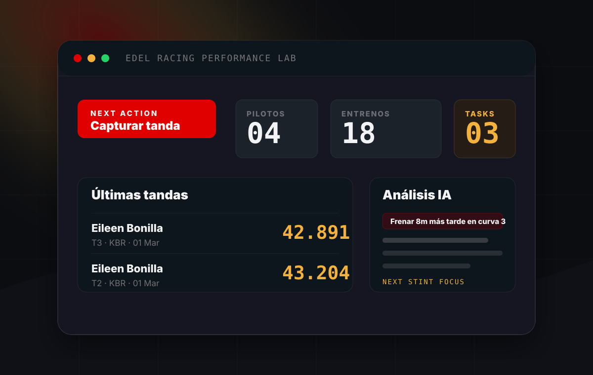

Sistema en desarrollo para convertir cada tanda en una decisión clara para el siguiente stint.

Edel Racing Performance Lab nace para ordenar el entrenamiento real de karting: pilotos, sesiones, tandas, tiempos por vuelta, setup del chasis, clima, telemetría RaceBox y análisis generado por IA.
La pregunta central del sistema es directa: qué debe trabajar el piloto en la próxima tanda. Todo lo demás existe para responder eso con evidencia, no con intuición suelta.
"El dato solo sirve si cambia la siguiente salida a pista."Principio de producto · Edel Racing
El home del sistema prioriza lo que importa en pista: nuevo entrenamiento, captura de tanda, pilotos activos, tareas pendientes, últimos tiempos y sesiones recientes. La interfaz está pensada para usarse rápido, antes o después de entrar al kart.
Cada tanda puede cargar datos de RaceBox, asociarse a piloto y entrenamiento, persistir puntos GPS y preparar cortes de sector desde KML. El objetivo no es guardar archivos, es construir contexto para comparar vueltas y detectar dónde se gana o se pierde tiempo.
El sistema genera análisis por tanda, briefing antes del entrenamiento, reportes PDF y tareas pendientes para el piloto. La salida esperada no es una gráfica bonita, es una instrucción verificable para probar en pista.
Sesiones, pilotos, stints y objetivos diarios quedan en una misma estructura operativa.
CSV, puntos GPS y líneas de sector preparan el mapa de pista y la lectura por segmentos.
El sistema cruza objetivos, resultados de tanda y observaciones para producir recomendaciones.
PDFs, briefing y tareas pendientes conectan el análisis con la siguiente salida a pista.
Cuéntanos qué decisiones se siguen tomando a mano. El diagnóstico es gratuito y sin compromiso.